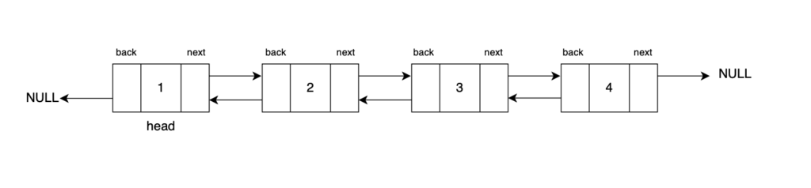
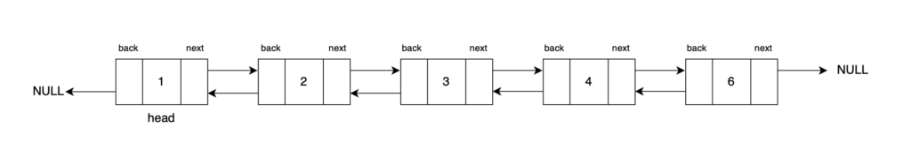
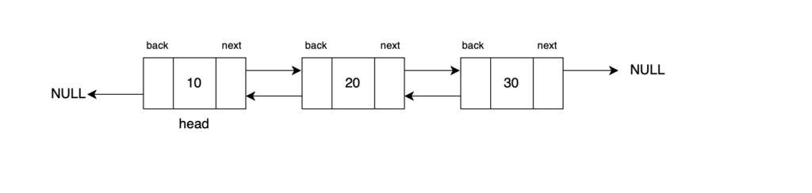
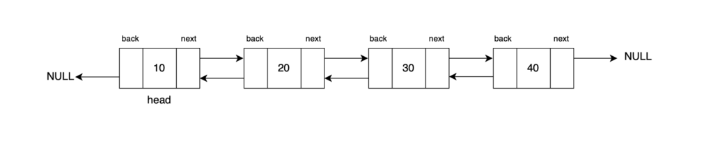
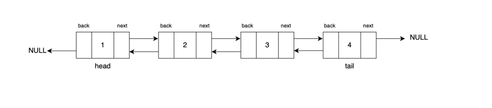
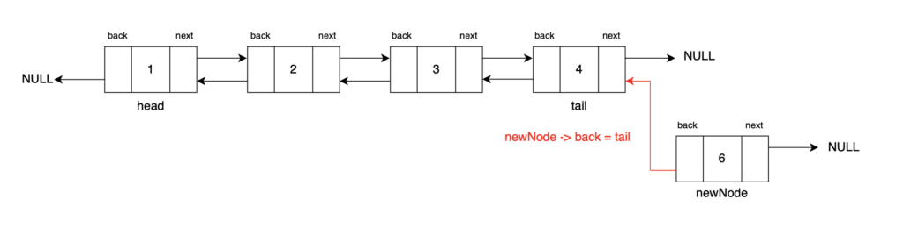
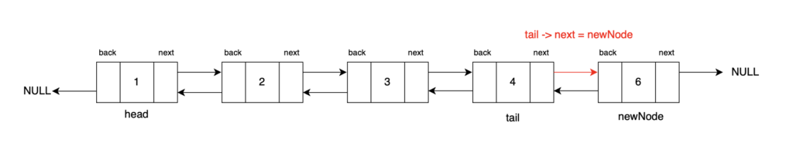

Problem Statement: Given a doubly linked list, and a value ‘k’, insert a node having value ‘k’ at the end of the doubly linked list.
Examples
Example 1:
Input Format:
DLL: 1 <-> 2 <-> 3 <-> 4
Value to be Inserted: 6

Result: DLL: 1 <-> 2 <-> 3 <-> 4 <-> 6

Explanation: A new node with value 6 has been inserted at the end of the doubly linked list after the tail node.
Example 2:
Input Format:
DLL: 10 <-> 20 <-> 30
Value to be Inserted: 40

Result: DLL: 10 <-> 20 <-> 30 <-> 40

Explanation: In this case, a new node with value 40 is inserted after 30 which is at the end of the doubly linked list.
Solution
Disclaimer: Don't jump directly to the solution, try it out yourself first.
Approach:
To insert before a given node, begin by identifying its previousnode. This step is assured since the provided node is never the head. Create a newnode with the specified value and set its back and next pointers to the previousnode and the givennode, respectively. To seamlessly integrate the new node into the doubly linked list, set the previous node's next pointer and the given node's back pointer to the newnode.
Step 1: Traverse through the list, and reach the tail of the DLL. Let’s use a node tail traverse from the head.

Step 2: Create a new node with its data as k and back pointer pointing to tail and next pointer pointing to null as the new tail will point to null.

Step 3: Update the nextpointer of the current tailnode to point to the newly created node which will be our new tail post this. Then, return the head of the updated doubly linked list.

Code:
#include <iostream>
#include <bits/stdc++.h>
using namespace std;
// Define a Node class for doubly linked list
class Node {
public:
// Data stored in the node
int data;
// Pointer to the next node in the list (forward direction)
Node* next;
// Pointer to the previous node in the list (backward direction)
Node* back;
// Constructor for a Node with both data, a reference to the next node, and a reference to the previous node
Node(int data1, Node* next1, Node* back1) {
data = data1;
next = next1;
back = back1;
}
// Constructor for a Node with data, and no references to the next and previous nodes (end of the list)
Node(int data1) {
data = data1;
next = nullptr;
back = nullptr;
}
};
// Function to convert an array to a doubly linked list
Node* convertArr2DLL(vector<int> arr) {
// Create the head node with the first element of the array
Node* head = new Node(arr[0]);
// Initialize 'prev' to the head node
Node* prev = head;
for (int i = 1; i < arr.size(); i++) {
// Create a new node with data from the array and set its 'back' pointer to the previous node
Node* temp = new Node(arr[i], nullptr, prev);
// Update the 'next' pointer of the previous node to point to the new node
prev->next = temp;
// Move 'prev' to the newly created node for the next iteration
prev = temp;
}
// Return the head of the doubly linked list
return head;
}
// Function to print the elements of the doubly linked list
void print(Node* head) {
while (head != nullptr) {
// Print the data in the tail node
cout << head->data << " ";
// Move to the next node
head = head->next;
}
}
// Function to insert a new node with value 'k' at the end of the doubly linked list
Node* insertAtTail(Node* head, int k) {
// Create a new node with data 'k'
Node* newNode = new Node(k);
// If the doubly linked list is empty, set 'head' to the new node
if (head == nullptr) {
return newNode;
}
// Traverse to the end of the doubly linked list
Node* tail = head;
while (tail->next != nullptr) {
tail = tail->next;
}
// Connect the new node to the last node in the list
tail->next = newNode;
newNode->back = tail;
return head;
}
int main() {
vector<int> arr = {12, 5, 8, 7, 4};
Node* head = convertArr2DLL(arr);
cout << "Doubly Linked List Initially: " << endl;
print(head);
cout << endl << "Doubly Linked List After Inserting at the tail with value 10: " << endl;
// Insert a node with value 10 at the end
head = insertAtTail(head, 10);
print(head);
return 0;
}
Output:
Doubly Linked List Initially: 12 5 8 7 4 Doubly Linked List After Inserting at the tail with value 10: 12 5 8 7 4 10
Time Complexity: O(N) The time complexity of this insertion operation is O(N) because we have to traverse the entire list to reach its tail. The complexity would be O(1) if we were given the tail node directly.
Space Complexity: O(1) The space complexity is also O(1) because we are notusing any extradatastructures to do the operations apart from creating a single new node.
public class DLinkedList {
public static class Node {
// Data stored in the node
public int data;
// Reference to the next node in the list (forward direction)
public Node next;
// Reference to the previous node in the list (backward direction)
public Node back;
// Constructor for a Node with both data, a reference to the next node, and a reference to the previous node
public Node(int data1, Node next1, Node back1) {
data = data1;
next = next1;
back = back1;
}
// Constructor for a Node with data, and no references to the next and previous nodes (end of the list)
public Node(int data1) {
data = data1;
next = null;
back = null;
}
}
private static Node convertArr2DLL(int[] arr) {
// Create the head node with the first element of the array
Node head = new Node(arr[0]);
// Initialize 'prev' to the head node
Node prev = head;
for (int i = 1; i < arr.length; i++) {
// Create a new node with data from the array and set its 'back' pointer to the previous node
Node temp = new Node(arr[i], null, prev);
// Update the 'next' pointer of the previous node to point to the new node
prev.next = temp;
// Move 'prev' to the newly created node for the next iteration
prev = temp;
}
// Return the head of the doubly linked list
return head;
}
private static void print(Node head) {
while (head != null) {
// Print the data in the current node
System.out.print(head.data + " ");
// Move to the next node
head = head.next; // Move to the next node
}
System.out.println();
}
// Function to insert a new node with value 'k' at the end of the doubly linked list
private static Node insertAtTail(Node head, int k) {
// Create a new node with data 'k'
Node newNode = new Node(k);
// If the doubly linked list is empty, set 'head' to the new node
if (head == null) {
return newNode;
}
// Traverse to the end of the doubly linked list
Node current = head;
while (current.next != null) {
current = current.next;
}
// Connect the new node to the last node in the list
current.next = newNode;
newNode.back = current;
return head;
}
public static void main(String[] args) {
int[] arr = {12, 5, 6, 8, 4};
// Convert the array to a doubly linked list
Node head = convertArr2DLL(arr);
// Print the doubly linked list
System.out.println("Doubly Linked List Initially: ");
print(head);
System.out.println("Doubly Linked List After Inserting before the node with value 8:");
head = insertAtTail(head, 10); // Insert a node with value 10 at the end
print(head);
}
}
Output:
Doubly Linked List Initially: 12 5 8 7 4 Doubly Linked List After Inserting at the tail with value 10: 12 5 8 7 4 10
Time Complexity: O(N) The time complexity of this insertion operation is O(N) because we have to traverse the entire list to reach its tail. The complexity would be O(1) if we were given the tail node directly.
Space Complexity: O(1) The space complexity is also O(1) because we are notusing any extradatastructures to do the operations apart from creating a single new node.
class Node:
def __init__(self, data, next_node=None, back_node=None):
"""
Constructor for a Node with data, a reference to the next node, and a reference to the previous node.
"""
self.data = data
self.next = next_node
self.back = back_node
def convertArr2DLL(arr):
"""
Function to convert an array to a doubly linked list.
"""
# Create the head node with the first element of the array
head = Node(arr[0])
# Initialize 'prev' to the head node
prev = head
for i in range(1, len(arr)):
# Create a new node with data from the array and set its 'back' pointer to the previous node
temp = Node(arr[i], None, prev)
# Update the 'next' pointer of the previous node to point to the new node
prev.next = temp
# Move 'prev' to the newly created node for the next iteration
prev = temp
# Return the head of the doubly linked list
return head
def print_list(head):
"""
Function to print the elements of the doubly linked list.
"""
while head is not None:
# Print the data in the current node
print(head.data, end=" ")
# Move to the next node
head = head.next
def insert_at_tail(head, k):
"""
Function to insert a new node with value 'k' at the end of the doubly linked list.
"""
# Create a new node with data 'k'
new_node = Node(k)
# If the doubly linked list is empty, set 'head' to the new node
if head is None:
return new_node
# Traverse to the end of the doubly linked list
tail = head
while tail.next is not None:
tail = tail.next
# Connect the new node to the last node in the list
tail.next = new_node
new_node.back = tail
return head
# Main program
arr = [12, 5, 8, 7, 4]
head = convertArr2DLL(arr)
print(“\nDoubly Linked List Initially:”)
print_list(head)
print("\nDoubly Linked List After Inserting at the tail with value 10:")
# Insert a node with value 10 at the end
head = insert_at_tail(head, 10)
print_list(head)
Output:
Doubly Linked List Initially: 12 5 8 7 4 Doubly Linked List After Inserting at the tail with value 10: 12 5 8 7 4 10
Time Complexity: O(N) The time complexity of this insertion operation is O(N) because we have to traverse the entire list to reach its tail. The complexity would be O(1) if we were given the tail node directly.
Space Complexity: O(1) The space complexity is also O(1) because we are notusing any extradatastructures to do the operations apart from creating a single new node.
[tabby title="JavaScript Code"]
// Define a Node class for doubly linked list
class Node {
constructor(data) {
this.data = data; // Data stored in the node
this.next = null; // Pointer to the next node in the list (forward direction)
this.back = null; // Pointer to the previous node in the list (backward direction)
}
}
// Function to convert an array to a doubly linked list
function convertArr2DLL(arr) {
// Create the head node with the first element of the array
let head = new Node(arr[0]);
// Initialize 'prev' to the head node
let prev = head;
for (let i = 1; i < arr.length; i++) {
// Create a new node with data from the array and set its 'back' pointer to the previous node
let temp = new Node(arr[i]);
temp.back = prev;
// Update the 'next' pointer of the previous node to point to the new node
prev.next = temp;
// Move 'prev' to the newly created node for the next iteration
prev = temp;
}
// Return the head of the doubly linked list
return head;
}
// Function to print the elements of the doubly linked list
function print(head) {
while (head !== null) {
// Print the data in the current node
console.log(head.data + ' ');
// Move to the next node
head = head.next;
}
}
// Function to insert a new node with value 'k' at the end of the doubly linked list
function insertAtTail(head, k) {
// Create a new node with data 'k'
let newNode = new Node(k);
// If the doubly linked list is empty, set 'head' to the new node
if (head === null) {
return newNode;
}
// Traverse to the end of the doubly linked list
let tail = head;
while (tail.next !== null) {
tail = tail.next;
}
// Connect the new node to the last node in the list
tail.next = newNode;
newNode.back = tail;
return head;
}
// Main function
function main() {
let arr = [12, 5, 8, 7, 4];
let head = convertArr2DLL(arr);
console.log(‘\nDoubly Linked List Initially: ‘);
print(head);
console.log('\nDoubly Linked List After Inserting at the tail with value 10: ');
// Insert a node with value 10 at the end
head = insertAtTail(head, 10);
print(head);
}
main();
Output:
Doubly Linked List Initially: 12 5 8 7 4 Doubly Linked List After Inserting at the tail with value 10: 12 5 8 7 4 10
Time Complexity: O(N) The time complexity of this insertion operation is O(N) because we have to traverse the entire list to reach its tail. The complexity would be O(1) if we were given the tail node directly.
Space Complexity: O(1) The space complexity is also O(1) because we are notusing any extradatastructures to do the operations apart from creating a single new node.
In case you are learning DSA, you should definitely check out our free A2Z DSA Course with videos and blogs.
Special thanks to Gauri Tomar for contributing to this article on takeUforward. If you also wish to share your knowledge with the takeUforward fam, please check out this article